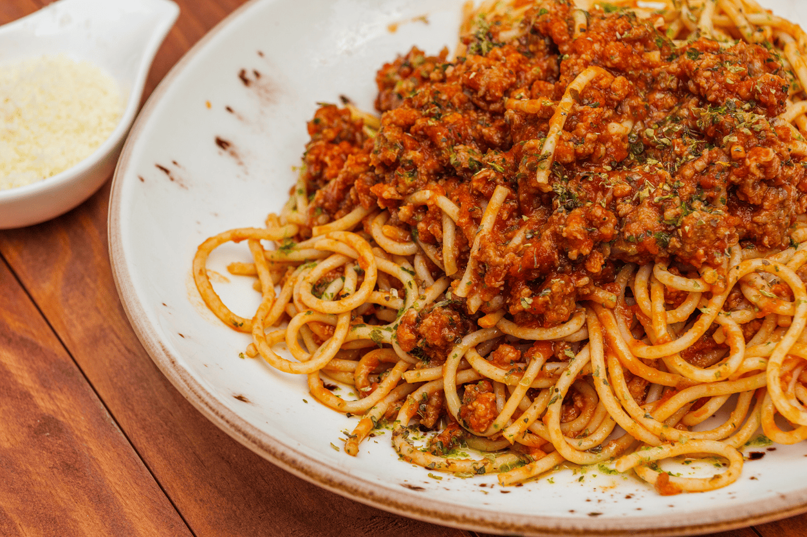

Home
Spaghetti Bolognese

Description
Spaghetti Bolognese, reheat it easily. Tastes good, put it on other things if you don't have spaghetti.
Serves: 4 people
Ingredients
- 400g Beef mince
- 1 Onion
- 4-6 Mushrooms
- 2 cloves crushed, or 2 teaspoons minced garlic from jar. (Add more)
- 1 Can of tomatoes, crushed.
- Beef stock cube.
- Salt, pepper, mixed herbs, your choice.
- Pasta
- 1 Dessert Spoon of Cooking oil
Instructions
- Heat the oil, brown the mince. Add onion and garlic.
- Boil jug to cook pasta.
- Once water from mince has cooked off, add tin of tomatoes
- Add 500ml beef stock (boiled water, stock cube, make it in a jug, stir, add any herbs)
- Cook pasta
- Add any other veges. can add extra vege to bulk it out.
- Stir as needed, cook until its thickened nicely.
*To make this into a chilli/nachos, swap the mushrooms for chilli beans or red kidney beans and add chilli powder instead of herbs.